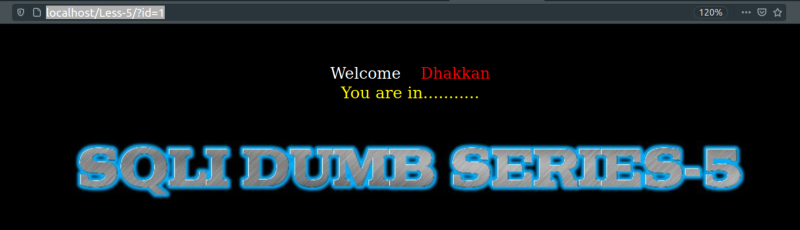

Double Query Injection
In this lesson we will learn how to perform an error-based “Double Query Injection” attack. We'll base our job on Lab 5.
We'll use the errors to dump out the information from the database to us.
a) First option.
URL: http://localhost/Less-5/?id=1

Result: Instead of showing the Username and Password as in the previous sections, we get a different message “You are in..........”. We don't see any output from the databse. If you change the id number it won't change the message.
b) Let's try to break the query.
URL: http://localhost/Less-5/?id=3'
Result: We got a Database Error.
~~~~~~~~~~~~~~~~~~~~~~~~~~~~~~~~~
URL: http://localhost/Less-5/?id=1' --+
Result: No error but not data.
~~~~~~~~~~~~~~~~~~~~~~~~~~~~~~~~~
URL: http://localhost/Less-5/?id=1' OR '1
Result: No error but not data.
NOTE: If we can get a Database Error the with that error we can extract the information we want, therefore we cannot use the UNION SELECT to dump the database information.
The only information we see reflecting back from the database on the webpage is in the form of MySQL errors. Therefore, we need to craft our queries in such a way that we are able to dump the database information through errors. The criteria for the query is that it’s syntactically correct and accepted by db driver and passed on to the backend database for execution. This query should then produce a logical error and dump information as an error string with the error returned.